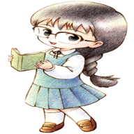

GAROTAS Pular para seção: Níveis do Coração, Dando Presentes, Eventos, Casamento, Rivais, Seu Filho Em Harvest Moon: Back to Nature você tem a oportunidade de se casar com uma de cinco garotas diferentes. Você não tem que se casar mas se você se casar você terá 1% adcionado a sua porcentagem da fazenda para cada nível de coração que sua esposa alcança.  Ann Elli Karen Mary Popuri ᐅNeste jogo cada garota tem um status de afeto escondida que aumenta ou dominui baseado em qual presentes você da a elas e como você responde durante certas cenas de eventos. Quando o afeto da garota aumenta ela vai passar por 7 níveis de coração e quando ela alcançar o coração final você pode propor a ela em casamento. NÍVEIS DO CORAÇÃO Nível do Coração Nível de Afeto Significado Preto 0 a 4.999 de Afeto Vocês dois são estranhos Roxo 5.000 a 19.999 de Afeto Vocês se tornam conhecidos Azul 20.000 a 29.999 de Afeto Você se tornam bons amigos Verde 30.000 a 39.999 de Afeto Vocês realmente são bons amigos agora e talvez começe a flertar um pouco Amarelo 40.000 a 49.999 de Afeto Ela tem uma queda por você Laranja 50.000 a 59.999 de Afeto Ela está começando a gostar realmente de você Vermelho 60.000 a 65.535 de Afeto Ela está apaixonada por você! DANDO PRESENTE Você pode repetidamente dar presentes para uma garota durante o mesmo dia em Harvest Moon: Back to Nature. O Primeiro Presente que você dá a ela terá um grande efeito em seu nível de afeto mas qualquer presente que você der depois disso ainda tem um grande efeito que valerá a pena. Se você der a ela um presente no aniversário dela neste jogo ela terá um efeito muito maior em seu afeto do que se você der a ela um presente em um dia normal. Embrulhar o presente com o papel de embrulho que você pode comprar no supermercado aumentará o efeito que o presente tem ainda mais. As garotas também ganharão +200 de afeto no começo de cada dia se você deu a elas um presente ou falou com elas no dia antes. Se seu animal morre neste jogo então todas as garotas perderão 1.000 de afeto. Como o primeiro presente dado em um dia afeta o nível de afeto da garota Tipo de Presente Dia Comum, Não Embrulhado Dia Comum Embrulhado Aniversário, Não Embrulhado Aniversário, Embrulhado Odeia -800 -800 -800 -4.000 Não Gosta -500 -500 -500 -2.500 Neutro +100 +100 +100 +500 Gosta +300 +300 +300 +2.500 Adora +500 +500 +500 +2.500 Perfume +1.000 Você não pode embrulhar o perfume +1.000 Você não pode embrulhar o perfume Como presentes adicionais dados em um dia afetam os níveis de afeto de uma garota Tipo de Presente Dia Comum, Não Embrulhado Dia Comum Embrulhado Aniversário, Não Embrulhado Aniversário, Embrulhado Odeia -800 -800 -800 -4.000 Não Gosta -500 -500 -500 -2.500 Neutro 0 0 0 0 Gosta +100 +100 +100 +500 Adora +300 +500 +300 +1.500 Perfume +1.000 Você não pode embrulhar o perfume +1.000 Você não pode embrulhar o perfume EVENTOS Há também muitos eventos com cada garota que você pode ativar em Harvest Moon: Back to Nature se você encontrar certas condições. Durante estes eventos você frequentemente terá a oportunidade para fazer uma escolha no qual você pode ter uma grande quantidade de pontos de afeto, fazer nada ou diminuir seus níveis de afeto. Há encontros com garotas neste jogo, e você pode escolhar o que quer dizer a ela, a sua escolha decidira se o nível de afeto da garota vai aumentar ou diminuir. Parece que tem um evento para cada nível de coração com cada garota mas infelizmente há pouca informação sobre eles na internet. Guias aleatórios parecem ter um ou dois dos primeiros eventos para cada garota mas essa é a melhor informação que você achará. Eu não listei os eventos aqui por que eu não queria incluir informação incompleta. CASAMENTO Para se casar em Harvest Moon: Back to Nature você precisa de uma garota com nível de coração rosa. Você também precisa comprar os dois upgrades da casa. Assim você pode comprar uma "Pena Azul/Flor Azul" no supermercado. Dê a pena a garota e uma semana depois você vai estar casado na igreja e você não sera capaz de fazer nenhum trabalho nesse dia. Won pode vir para sua fazenda e tentar vender uma "Pena Azul" por preço um absurdo de 30.000G mas não compre!. Ela está no supermercado neste jogo por um preço menor. Sua esposa pode deixar você. Se você der a ela uma tonelada de presentes que ela odeia e seu afeto cai abaixo de 5.000, ela deixará você. Você pode ter ela de volta visitando na sua velha casa e se desculpar. Depois de você se desculpar seu afeto subirá para 30.000 pontos. RIVAIS Cada uma das garotas tem um rival que ela pode se casar se você não casar com ela. Parece que o rival pode casar com as garotas em qualquer momento do 3(terceiro)ano neste jogo Para que o rival se case com uma garota em particular você tem que assistir umas séries de "Eventos romanticos dos Rivais". Cada um desses eventos tem uma certa condição que tem que ser atendida antes de você poder ve-los. Infelizmente, ninguém parece realmente saber quais são todas as condições para todas essas cenas. Há pouca informação sobre estes eventos de rivais na internet então você provalvelmente terá que ir a muitos lugares possíveis e esperar um deles acontecerem. Confiantemente no fim do terceiro ano você deveria ter encontrado a maioria deles do seu próprio jeito. Se você se casar antes do terceiro ano então você não precisa se preocupar com a garota que quer se casar com seu rival. Também, não importa quão muito uma garota gosta de você. Se depois do terceiro ano e você tem visto todos os eventos de afeto dos rivais ela ainda se casará com o rival, mesmo se ela tem um coração rosa com você. SEU FILHO Em Harvest Moon: Back to Nature depois de você ter sido casado por 32 dias sua esposa ficará grávida e 58 dias depois ela dará a luz a um bebê. No começo da gravidez sua esposa começara a reclamar dizendo que não está se sentindo bem. Quando isso acontece você tem ir para o hospital uma vez e nos próximos 8 dias o doutor diagnosticará que ela está grávida. Se você esquecer de levar ela para o hospital nestes 8 dias sua esposa ficará doente e perderá alguns pontos de afeto. No dia que seu filho nasce você não será capazz de fazer qualquer trabalho. Seu bebê começa com 50 pontos de afeto neste jogo e você não pode dar a ele qualquer presente até 60 dias depois dele nascer. O QUE SEU FILHO GOSTA E NÃO GOSTA Seu filho tem uma quantidade de afeto máxima de 255 e ganha a mesma quantidade de pontos de afeto de presentes igual ao resto dos aldeãos. Adora Bolo(Cake), Bolo de Queijo(Cheese cake), Suco de uva(Grape juice), Mel(Honey), Leite quente(Hot Milk), Sorvete(Ice cream), Macarrão(Noodles) e Uva silvestre(Wild grape) Gosta Maçã(Apple), Flor vermelha mágica azul(Blue Magic Red Flower), Galho(Branch), Cenoura(Carrot), Chocolate, Bolo de chocolate(Chocolate cake), Batata frita(Fries), Suco de fruta(Fruit Juice), Latte de fruta(Fruit latte), Maionese(Mayonnaise), Leite(Milk), Suco misto(Mixed Juice), Latte misto(Mixed latte), Flor de amendoeira(Moondrop Flower), Omelete(Omelet), Taça de laranja(Orange cup fruit), Abacaxi(Pineapple), Flor do gato rosa(Pink cat flower), Pudim de Abobora(Pumpkin Pudim), Flor da magia vermelha vermelha(Red magic red flower), Folhas de chá relaxantes(Relaxation tea leaves), Pedra(Stone), Morango(Strawberry), SUGDW Maçã(Apple), Batata doce(Sweet Potato) (prato)(Sweet Potato(dish)), Suco de tomate(Tomato juice), flor de brinquedo(Toy flower), Suco de Vegetais(Vegetable Juice), Latte vegetariano(Veggie latte), Galho de inverno(Winter Branch), Pedra de inverno(Winter Stone) e Novelo(Yarn) Neutro Geleia de Maçã(Apple jam), Torta de Maçã(Apple pie), Ovo cozido(Boiled egg), Pão(Bread), Pão francês (Dinner rool), Ovo(Egg), Ovo de ouro(Gold Egg), Geleia de uva(Grape Jam), Vegetais(Greens), Peixe grelhado(Grilled Fish, ), Berinjela feliz(Happy Eggplant), Pão com geleia(Jam Bun), Joalheria(Jewerly), Ketchup, Sopa de missô(Miso soup), Pipoca(Popcorn), Abobora(Pumpkin), Pão de passas (Raisin Bread), Chá relaxante(Relaxation Tea), Bolinho de arroz(Rice ball), Omelete de arroz(Rice omelet), Batatas torradas(Rosated Potatoes), Salada(Salad), Sandwich, Ovos mexidos(Scrambled eggs), Ovo cozido(Boiled egg) do Spa, Espinafre(Spinach), Bobó(Stew), Geleia de Morango(Strawberry jam), Leite de Morango(Strawberry milk) e Tomate(Tomato) Não Gosta Arroz de bambu(Bamboo rice), Bodigizer, Bodigizer XL, Manteiga(Butter), Repolho(Cabbage), Queijo(Cheese), Fondue de Queijo(Cheese fondue), Chirashi Sushi, Biscoito de chocolate(Chocolate cookie), Biscoito(Cookie), Milho(Corn), Pepino(Cucumber), Curry, Macarrão com Curry(Curry noodles), Berinjela(Eggplant), Peixe (qualquer tamanho)(Fish(any size)), Um fiasco de comida(Food fiasco), Macarrão frito(Fried Noodles), Arroz frito(Fried Rice), Pimenta verde(Green Pepper), Cogumelo(Mushroom), Arroz de Cogumelo(Mushroom), Cebola(Onion), Nabos em conserva(Pickled turnips), Picles(Pickles), Pizza, Batata(Potato), Erva vermelha(Red grass), Sashimi, Fritada(Stir fry), Sushi, Batata doce(Sweet Potato), Tempura, Macarrão com tempura(Tempura noodles), Trufa(Truffle), Arroz de Trufa(Truffle), Turbojolt, Turbojolt XL, Nabo(Turnip) e Panqueca Vegetariana(Veggie Pancake) Odeia Adamantite, Broto de bambu(Bamboo shoot), Curativo(Bandage), Erva Azul(Blue grass), Ração de galinha(Chicken feed), Minério de cobre(Copper ore), Curry em pó(Curry Powder), Erva seca(Dead weeds), Comida de peixe(Fish food), Farinha(Flour), Forragem(Fodder), Receita de Batata frita(Fries recipe), Lixo(Garbage), Minério de ouro(Gold ore), Erva verde(Green grass), Madeira(Lumber), Mystrile, Óleo(Oil), Orichalc, Cogumelo Venenoso(Mushroom Poisonous), Minério de prata(Silver ore), Erva(Weed), Vinho(Wine), Madeira de inverno(Winter lumber) e Lã(Wool) Olá! Bem-Vindo!